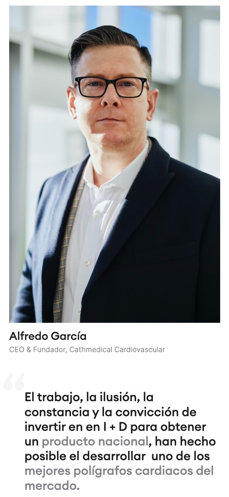

The product cards are visually clear and sensibly sorted. The layout was created using the modern css grid method, which allows you to maintain the integrity of the design as information is updated
On the product page, the advantages of the product are clearly highlighted so that the consumer can make the best choice
The technical information and product specifications are presented in a clear visual style

The website looks good on all devices and retains the visual and graphic elements, making it versatile for presenting complex medical products
